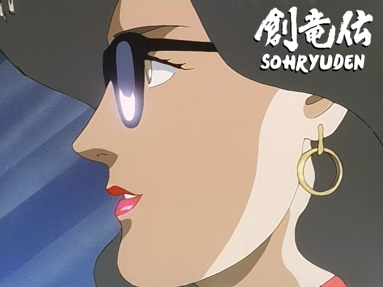

Bienvenue sur le site de la Nobluesky Fansub !
Teekyuu Saison 9 Ep 4 vostfr
Bonsoir,
voici l'épisode 4, un spécial pour le 100e ! Longue vie à Teekyuu !
Sans plus de manières voici les liens, mon plumard m'appelle avec force insistance et je ne saurais le faire attendre davantage...
Teekyuu Saison 9 Ep 2 à 3 vostfr

Salut à tous !
J'ai eu quelques difficultés de plomberie avec mon évier qui ont retardé l'épisode 2 (je crois que c'est la meilleure excuse de l'histoire du sub celle-là xD), mais je me rattrape !
Cette fois, si vous fêtez vos anniversaires cet été, ne faites surtout pas comme les filles du club de tennis^^
Nous avons aussi droit à "une journée particulière" si j'ose dire...
Teekyuu Saison 9 Ep 1 vostfr
Bonjour à tous,
J'espère que vous passez un bon été, on va réchauffer tout ça avec Teekyuu !
Ne me dites pas que vous avez trop chaud, y'a pas à discuter^^
Cette série sans fin vous réserve probablement pas mal de surprises supplémentaires, alors c'est reparti ! Peut-être serai-je amené à faire des sorties par lots en fonction de mon emploi du temps, mais je ne lâche rien...
Sohryuden 05 vostfr

Bonjour,
nous revoici avec l'épisode 5, sans faute !
En attendant Teekyuu 9 pour nous marrer comme des baleines cet été, Sohryuden suit son cours, bientôt la moitié !
Aujourd'hui, un épisode qui passe des bourre-pifs au gore, car les frères affrontent un docteur maniaque qui ne manque pas de méthodes peu scrupuleuses. Bref, âmes trop sensibles s'abstenir, même si je trouve personnellement ça très drôle et caricatural. Quoi, je suis un grand malade ?? Nan, c'est faux !!
Je vous rappelle que nos épisodes sont disponibles au téléchargement sur le serveur dédié dans le menu du site...
Sohryuden 04 vostfr

Salut à tous, et bienvenue à bord après ce passage de pétole !
Un parc d'attraction, une fille qui crie tout le temps, une belle allumeuse, des méchants pas fins qui tirent très mal, des héros flegmatiques, une "filature" en hélico...